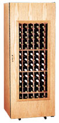

|
|
|  |
The problem we all want: Too much wine. Only it is a problem. After you have a few cases stacked up it becomes really hard to find anything. If you're like me you have one or two bottles from various wineries that you've visited, all stuffed into the same box. BottleCount will help you find it. Then there's all that tannic California Cabernet that you are planning to hold back for a few years until it peaks. BottleCount will keep track of when to drink it. Too lazy to bother taking tasting notes? BottleCount lets you share tasting notes, so you know what other people think of the wine as well.
|
|
|
Hi! I'm Bryn Dole. I wrote
BottleCount in my spare time to organize my growing wine collection.
Until recently I was working at Topix,
specializing in local news.
My experience creating and working on the Open
Directory Project has given me a good understanding of how
to build easy to use, online, applications. I drew on that experience
to create BottleCount.
Here are some useful wine links. | |
|
|
Joining is easy, just click the link, fill
out the form, and you are in like Flynn.
To get an idea of what's going on at BottleCount, check out the top 25 users of BottleCount, the most popular wines, and the most popular wineries. For a complete list of active BottleCount users look here. |
|